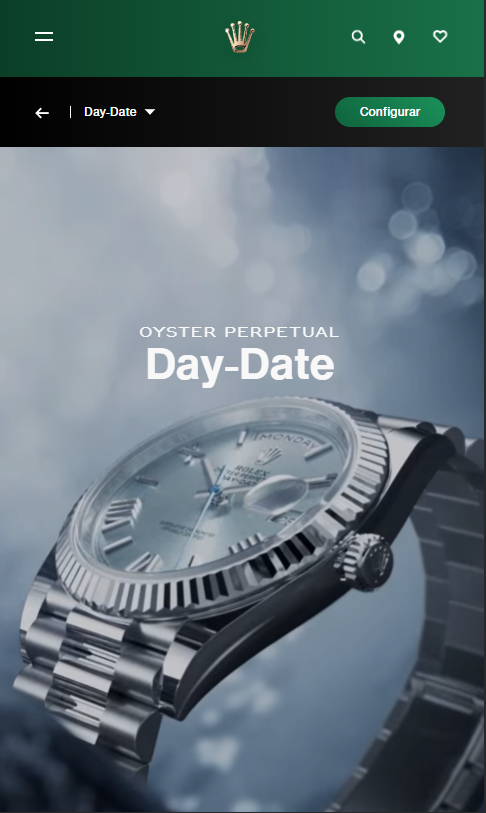
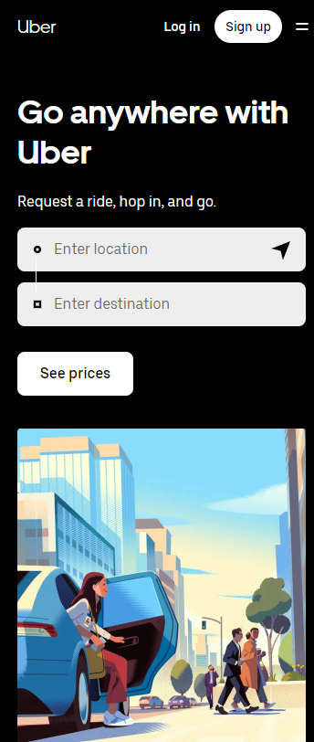

White Space and Clean Design
Rolex
Rolex 
When we visit the Rolex webpage, we discern the embodiment of White Space and Clean Design principles. This is achieved through a minimalist design, featuring a singular key message, a configuration button, and an image of a watch. This imparts an impression of less content, yet exudes a refined style.
For more information about White Space and Clean Design, you can visit:
White space in web design: What it is and how to use it
Hick's Law
Shein
Shein
"When we explore the Shein website, a platform boasting millions of items, we witness the application of Hick's Law. Here, we observe a meticulous categorization, maximizing simplicity by item and offer, optimizing the user experience.
For more information about Hick's Law principle, you can visit:
What web designers need to know about Hick’s Law
Fitt's Law
Uber
Uber 
When we glance at the Uber homepage, we can readily perceive the strategic placement of options like entering the address and viewing prices in close proximity. This thoughtful design enhances user experience, ensuring that requesting an Uber is both seamless and intuitively straightforward
For more information about Hick's Law principle, you can visit:
Fitts's Law and Its Applications in UX